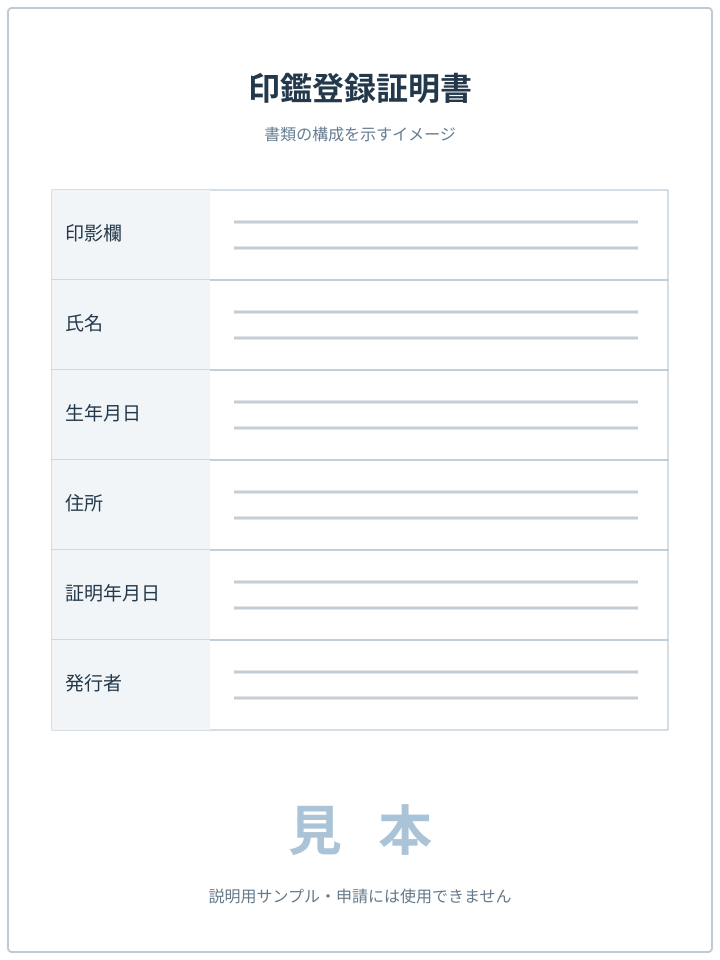
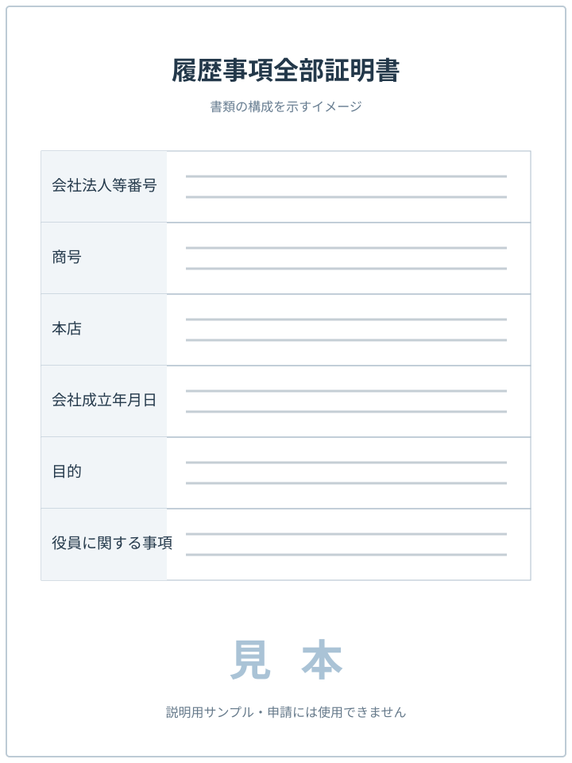
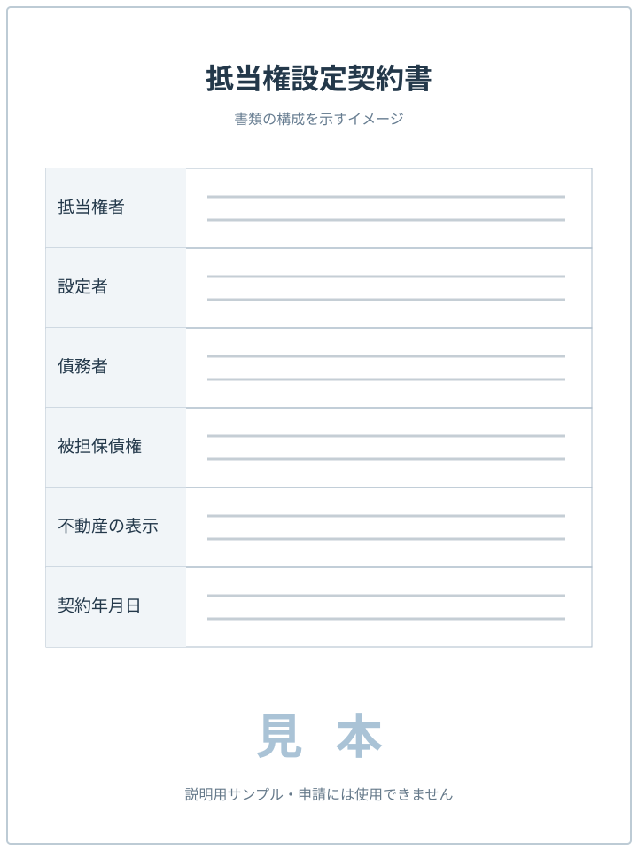
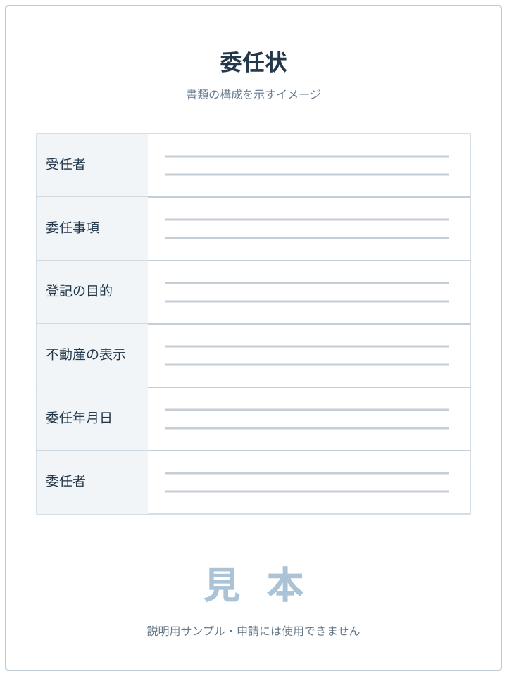

01登記済権利証
または
登記識別情報通知
不動産の権利を証明する書類です。
CASE 02銀行員のための不動産登記実務ガイド
住宅ローンや不動産融資を実行する際には、不動産を担保として抵当権設定登記を行います。
本ページでは、抵当権設定に必要な書類、費用の目安、書類作成時の確認ポイントを、
銀行担当者の方が実務で使えるように整理しています。
抵当権設定とは、住宅ローンや不動産融資などを行う際に、不動産を担保として設定する権利です。
金融機関が債権を保全するために、法務局で抵当権設定登記を行います。
不動産の権利を証明する書類です。

発行から3か月以内のもの。実印を押印します。
委任状などに押印します。

設定者が法人の場合は、履歴事項全部証明書などが必要です。

融資契約に基づく書類です（登記原因証明情報として使用します）。

金融機関が司法書士に登記申請を委任するための書類です。
| 項目 | 金額の目安 | 内容 |
|---|---|---|
| 登録免許税 | 約16万円 | 借入金額の0.4% （4,000万円 × 0.4% = 16万円） |
| 司法書士報酬 | 約5万〜8万円 | 書類作成・登記申請の手続き費用 （事務所により異なります） |
| 実費 | 約1万〜2万円 | 登記事項証明書の取得費用、郵送費など |
| 合計 | 約22万〜25万円 | ― |
※実際の手順は案件により異なる場合があります。
金銭消費貸借契約書などの契約を締結します。
設定者・金融機関それぞれの必要書類を準備します。
書類の作成・内容確認を行い、登記申請を依頼します。
司法書士が法務局へ抵当権設定登記を申請します。
登記完了後、登記識別情報や登記事項証明書などで内容を確認します。
次のようなケースでは、通常の手続きと異なる対応が必要になることがあります。
抵当権設定に関するご相談・必要書類の確認もお気軽にお問い合わせください。